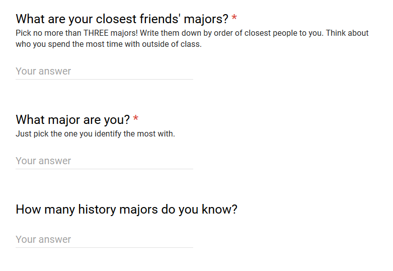

The questions no one cares about, but everyone's wondering
The question was:
Raw data available here.
My goal with this question was to attempt to map out some sort of social structure on campus. As a computer science major, I noticed my freshman year that all the people I considered friends were almost all exclusively CS majors, and my conversations all revolved around computers one way or another.
I figured I had to be an outlier. This is a well-rounded liberal arts campus after all. I still wanted to find out, do certain types of majors draw certain kinds of people? Are some majors just incompatible? Could there be some sort of social segregation based on major?
I attempted to visualize this by drawing all the connections. The thicker the connection, the more people asociated with that link:
Take a moment to explore this graph. Hovering over any node will hide all other nodes and just show you the connections of that node. You can also click and drag to move the nodes around.
Some of these connections aren't too surprising. For example, Japanese connects just to Asian Studies and Philosophy, while Biology seems to be pretty well connected. We could conclude that the majors in the center with the most connections have the most diverse friends, whereas those on the outskirts tend to only talk to those like them, but there's a problem with this kind of statement. It's a problem I've always kind of skipped over every time, but it's far too glaring in this dataset not to talk about.
Notice how almost all of the lines are of the same thickness. Perhaps only biology and its connections have thicker lines. That means every one of those connections is just one person. It's impossible to draw a conclusion about the relationship between maths & physics students when we only have one connection between those (despite the fact that more than 1 math major filled out the survey).
Fret not! This doesn't mean our data is completely useless. One thing we can say is that the most connected majors are likely just the most popular majors. This is a potential sign that the friend networks at St. Olaf are pretty evenly distributed, and that if we got more people to fill this out, we'd find more majors have as many connections as Biology or Psychology.
The other interesting thing to notice about this data is what is NOT present. Notice how many majors have no self connection.
I was completely surprised to see a lot of responses of people whose closest friends weren't in their own major. In fact only 45% of people (33 out of 73) had someone in their own major in their list of close friends.
You can see this in the graph by looking at the self edges. Notice how Computer Science & Music have very strong self edges, while Biology, despite being a popular major, has a very weak self edge.
I think of these as The Lonely Majors because I just can't imagine what it's like to go to class every day and be surrounded with people you have no strong connections with. It's strange to me because, at least in my case, these are the people I spend the most time with.
I wonder if it has anything to do with the culture associated with certain majors. Computer Science is often seen not just as a career but as a hobby.
Now I really want to expand on this study to see if this phenomenon persists as we increase the sample.
There's no particular reason I chose to ask specifically about history majors other than the fact that I realized I couldn't name a single one, and neither could anyone in my circle of friends (there turns out to be no connections in the data between CS and History, so perhaps this is to be expected).
Out of a total of 73 responses, people collectively knew 134 history majors. Which isn't too bad considering there's only 48 history majors on campus.
The average ole knows about 2 history majors.
This summary would imply that History is pretty well connected among the social fabric of campus, but the graph contradicts it (go back and check the connections on History). Here's another way we can look at this data:
You can see that the majority of people know either 0 or 1 history majors.
I obviously do. But I think so should you. The idea that we all have something to gain from people we might have little in common with is foundational to the liberal arts education. You can force people to take classes in different departments, but that might not translate to actual connections.
St. Olaf does a lot of really awesome Math-Bio collaborations. You can see a strong connection there in the graph.
I wish there was a tighter connection between art & CS. It really bothers me seeing a lot of art projects stifled because of a lack of technological expertise, while on the other side of campus, talented programmers struggle to put together well designed products.
Why do certain majors have such strong connections all around while others continue to be isolated? I think being able to articulate this can bring us closer together as a community.
And if you're not a history major, perhaps you can go out of your way to find one and say hi. (If you are a history major, it might help to hold a sign or something...)
– Omar